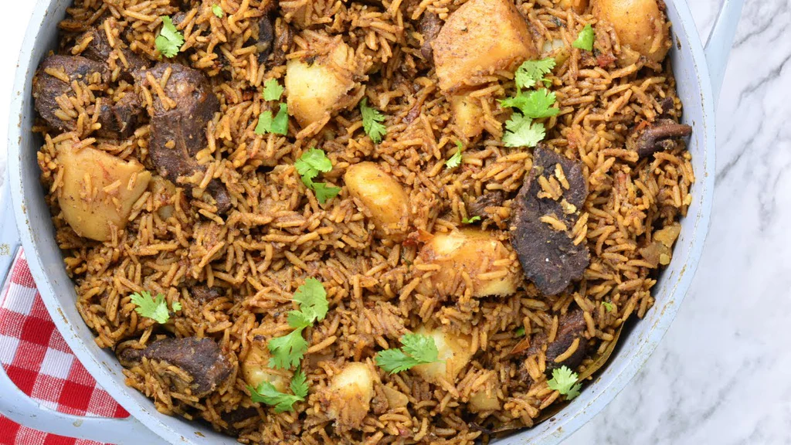

Pilau Recipe

Pilau is a flavorful and aromatic rice dish that originated in South Asia
and is popular in various cuisines worldwide. The dish involves cooking
basmati rice with a blend of spices such as cumin, cloves, cardamom, and
cinnamon, creating a fragrant and savory flavor profile. Often, pilau
includes sautéed onions, ginger-garlic paste, and a mix of vegetables for
added texture and taste. The rice is cooked in broth, either chicken or
vegetable, enhancing its richness. Pilau is known for its distinctive
yellow color, thanks to the inclusion of turmeric. The finished dish is a
delicious and well-seasoned rice preparation, commonly served as a side or
as a main course.
Ingredients
- 2 cups basmati rice
- 1 large onion, finely chopped
- 3 tablespoons vegetable oil
- 1 teaspoon cumin seeds
- 4 whole cloves
- 4 whole cardamom pods
- 2-inch cinnamon stick
- 1 bay leaf
- 1 teaspoon ground coriander
- 1 teaspoon ground cumin
- 1/2 teaspoon turmeric powder
- 1 teaspoon ginger-garlic paste
- 1 cup mixed vegetables (carrots, peas, and green beans)
- 4 cups chicken or vegetable broth
- Salt to taste
- Chopped fresh cilantro for garnish (optional)
Recipe
-
Rinse the basmati rice under cold water until the water runs clear. Soak
the rice in water for 30 minutes, then drain.
-
In a large pot, heat vegetable oil over medium heat. Add cumin seeds,
cloves, cardamom pods, cinnamon stick, and bay leaf. Sauté for a minute
until the spices release their aroma.
- Add the finely chopped onion and cook until golden brown.
-
Stir in ground coriander, ground cumin, turmeric powder, and
ginger-garlic paste. Cook for 1-2 minutes until fragrant
-
Add the mixed vegetables and drained rice to the pot. Stir to coat the
rice with the spices and vegetables.
-
Pour in the chicken or vegetable broth, season with salt, and bring to a
boil. Reduce the heat to low, cover the pot, and simmer for about 15-20
minutes or until the rice is tender and the liquid is absorbed.
-
Once cooked, fluff the rice with a fork. Cover the pot with a lid and
let it rest for 5-10 minutes to allow the flavors to meld.
-
Garnish with chopped cilantro if desired. Serve the pilau rice as a
flavorful side dish or with your choice of protein